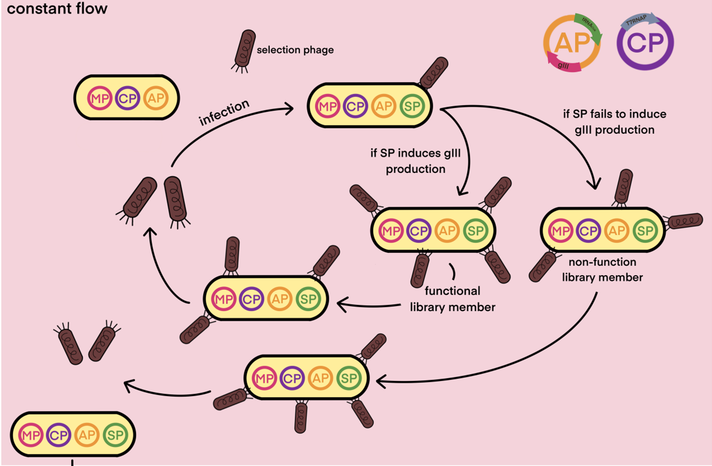

Description
At present, the incorporation of non-natural amino acids has become an important problem that restricts heterologous protein expression. MAP (mussel adhesive protein), a medical adhesive, cannot be mass produced because of the defect in the ability of aaRS to incorporate L-DOPA into protein. This causes the patient to choose sutures that cause more pain.
Why do we choose the project?
Background
MAP, a kind of protein complex secreted by mussel foot glands, is often used as biomedical adhesives because of its strong adhesion, good biodegradability and excellent biocompatibility. Therefore, they have a wide range of prospects in medical and other industries1,2. L-3,4-Dihydroxyphenylalanine (L-DOPA), a noncanonical amino acid formed by hydroxylation of tyrosine, is widely distributed in natural MAPs, acting as a key factor for adhesion3,4. With the development of the medical industry, the demand for MAPs is rising. However, the extraction of natural MAPs is costly and inefficient. And thus microbial heterologous expression has become one of the most important ways to produce this protein on a large scale5.

However, the natural aaRS cannot correctly increase L-DOPA into the protein, resulting in the loss of adhesion of MAPs producted by E. coli. Therefore, and we try to make aaRS more efficient and specific to recognize L-DOPA using directed evolution strategies.
.png)
Previous treatments
Researchers have used many strategies to incorporate L-DOPA into MAPs. For example, Yang and co-workers used a tyrosine-auxotrophy strain to make endogenous TyrRS recognize the L-DOPA as much as possible by reducing one of the substrates of the TyrRS---tyrosine6. The orthogonal translation system is appropriate for directly incorporating noncanonical amino acids such as L-DOPA7. Jeong and co-workers used Methanococcus jannaschii TyrRS (MjTyrRS) to incorporate L-DOPA at a given stop codon to increase L-DOPA in MAPs8. However, due to the similarity between tyrosine and L-DOPA in structure, MjTyrRS cannot distinguish them well, which limits the efficiency of L-DOPA incorporation.
Our goal
Therefore, we start with MjTyrRS-Gen 29 (hereinafter referred to as "Gen 2"), an engineered TyrRS with improved L-DOPA-incorporating activity. And we try to make Gen 2 more efficient and specific to recognize L-DOPA using directed evolution strategies.
Design
Overview
We create mutants through error prone PCR, site directed mutation and PACE(Phage-assisted continuous evolution). Among them, mutants produced by error-prone PCR and site directed mutation are screened by fluorescence,and mutants produced by PACE are screened by the device of PACE.


Strain
TyrRS specifically recognizes tyrosine and catalyzes the formation of tyrosyl-tRNA. During the Screening by Fluorescence,to avoid affecting the normal function of the original TyrRS in cells, we applied the modified TyrRS to the orthogonal translation system. This modified TyrRS catalyzes the aminoacylation of an artificial tRNA whose anticodon is UAG. Therefore, E. coli C321 ΔA muts-T7 strain was chosen as the host, in whose genome the UAG codons have been replaced by other stop codon, in order to avoid the incorporation of Tyr in UAG anticodon. The orthogonal TyrRS and modified strain enable the incorporation of noncanonical amino acids without interfering with the normal growth of E. coli.

Screening by Fluorescence
In order to select aaRS variants with potential capability of L-DOPA incorporation, sfGFP Y66-S205C containing the L-DOPA incorporation was applied as a reporter. It can emit green fluorescence (absorption peak at Ex=450 nm/Em=500 nm) with residue Y66 while emitting orange fluorescence (absorption peak at Ex=535 nm/Em=585 nm) with residue DOPA66. The intensity of orange fluorescence is positively proportional to the increase of L-DOPA incorporation. Thereby aaRS variants’ specificity and activity of binding L-DOPA could be quantified.

Through the above design, we can use the fluorescence value to represent the potential capability of L-DOPA incorporation of aaRS. We measure the fluorescence after induced expression of fluorescent protein to screen out mutant strains with high orange MFI. In general, the fluorescence intensity is positively correlated with the reproduction of the strains (the expression amount of sfGFP) and the L-DOPA incorporation efficiency. However, considering the influence of background fluorescence intensity on instrument detection, we usually consider data with low OD600 to be unreliable. Therefore, the variants with high MFI/OD600 but too low OD600 will be eliminated. The variants MFI/OD600 was higher than that of the control group, and the colony reproduction was at a reasonable level (1. 0 < OD600< 1. 4). They are considered benign mutants to bind L-DOPA strongly.

Screening by PACE
PACE is a high-throughput and time-saving strategy1,2. During PACE, phage infection and target gene activity are coupled. Host cells are infected with phages containing target genes in a flowing lagoons. On account of the induction of MP, the mutations in the whole genome of E. coli could be significantly increased, so as to establish a mutation library for the target gene. Only phages carrying the desired variants could better trigger the expression of gⅢ in host cells, which enabled themselves to propagate normally and exist stably in the lagoon.

Based on this, we designed a specific PACE system for directed evolution of TyrRS. The system evolves TyrRS through positive and negative selections. During the positive selection, the desired TyrRS mutant can bind L-DOPA to the amber suppressor tRNA, thereby allowing the complete translation of the amber terminator-containing T7 RNAP to initiate the expression of gIII, which in turn enables the phage to complete its propogation normally. During the negative selection, using tyrosine instead of L-DOPA as the enzyme substrate, the undesired TyrRS mutant can bind tyrosine to tRNA, so that T7 RNAP can be translated normally, and then the gIII-neg can be expressed, which fails the propagation of the phages, even if gIII expresses normally. Thus, TyrRS mutants that catalyze the binding of tyrosine to tRNAs are washed out from the lagoon. Through the positive and negative screening, we hope to increase the affinity of TyrRS for L-DOPA and decrease the binding capacity of TyrRS for tyrosine.

Reference
1 M. J. Harrington, A. Masic, N. Holten-Andersen, J. H. Waite, P. Fratzl, Iron-clad fibers: A metal-based biological strategy for hard flexible coatings. Science 328, 216-220 (2010). https://10. 1126/science. 1181044
2 J. Dove, P. Sheridan, Adhesive protein from mussels - possibilities for dentistry, medicine, and industry. Journal of the American Dental Association 112, 879-879 (1986).
3 J. H. Waite, Evidence for a repeating 3,4-dihydroxyphenylalanine- and hydroxyproline-containing decapeptide in the adhesive protein of the mussel, mytilus edulis l. The Journal of biological chemistry 258, 2911-2915 (1983).
4 M. E. Yu, J. Y. Hwang, T. J. Deming, Role of l-3,4-dihydroxyphenylalanine in mussel adhesive proteins. Journal of the American Chemical Society 121, 5825-5826 (1999). https://10. 1021/ja990469y
5 Xue Rui, Yao Lin, Wang Rui et al, Advances and Applications of Recombinant Mussel Foot Proteins. China Biotechnology 40, 82-89 (2020). https://10. 13523/j. cb. 2007046
6 B. Yang, N. Ayyadurai, H. Yun et al, In vivo residue-specific dopa-incorporated engineered mussel bioglue with enhanced adhesion and water resistance. Angewandte Chemie-International Edition 53, 13360-13364 (2014). https://10. 1002/anie. 201406099
7 S. Smolskaya, Y. A. Andreev, Site-specific incorporation of unnatural amino acids into escherichia coli recombinant protein: Methodology development and recent achievement. Biomolecules 9, (2019). https://10. 3390/biom9070255
8 Y. S. Jeong, B. Yang, B. Yang et al, Enhanced production of dopa-incorporated mussel adhesive protein using engineered translational machineries. Biotechnology and Bioengineering 117, 1961-1969 (2020). https://10. 1002/bit. 27339
9 R. Thyer, S. d'Oelsnitz, M. S. Blevins et al, Directed evolution of an improved aminoacyl-trna synthetase for incorporation of l-3,4-dihydroxyphenylalanine (l-dopa). Angewandte Chemie-International Edition 60, 14811-14816 (2021). https://10. 1002/anie. 202100579
10 K. M. Esvelt, J. C. Carlson, D. R. Liu, A system for the continuous directed evolution of biomolecules. Nature 472, 499-U550 (2011). https://10. 1038/nature09929
11 S. M. Miller, T. Wang, D. R. Liu, Phage-assisted continuous and non-continuous evolution. Nature Protocols 15, 4101-4127 (2020). https://10. 1038/s41596-020-00410-3